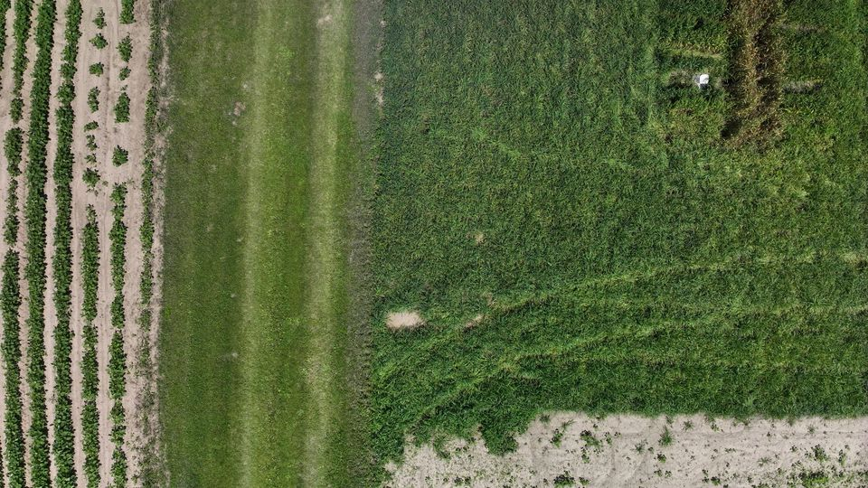
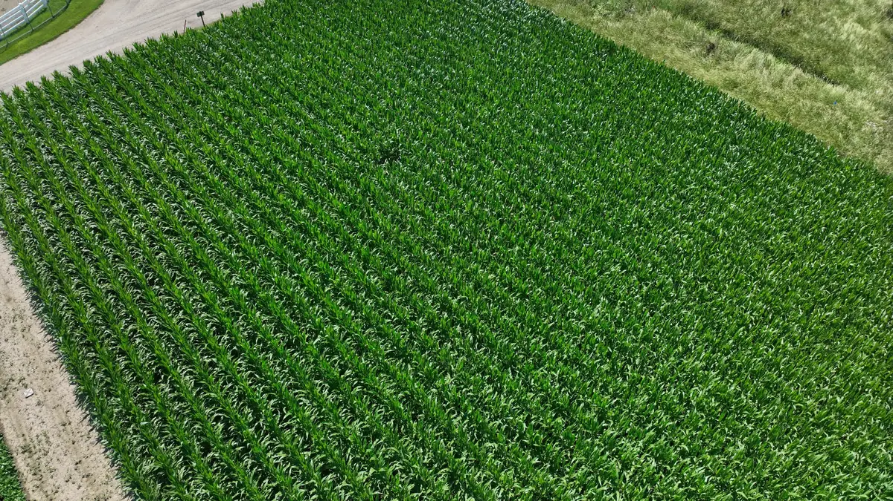
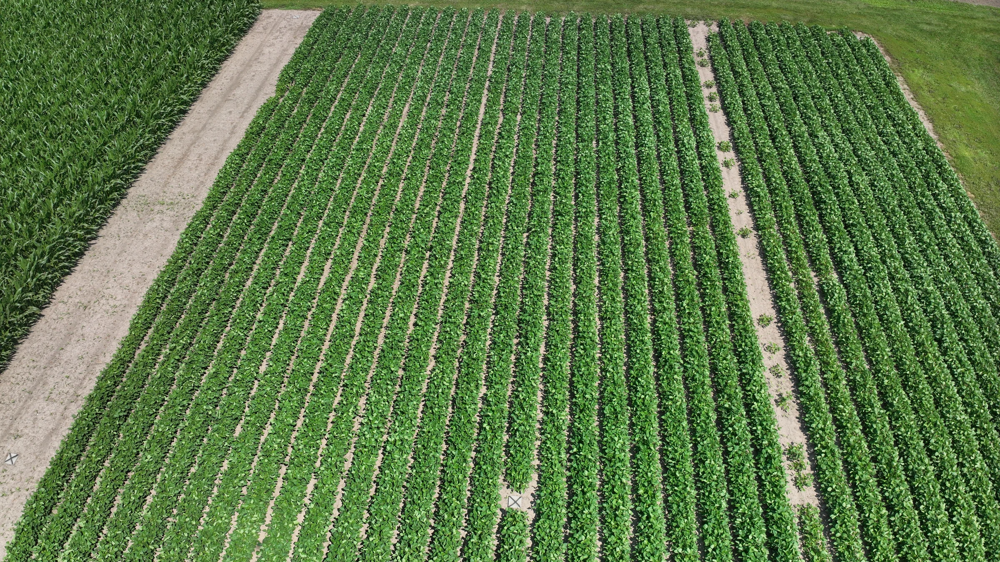
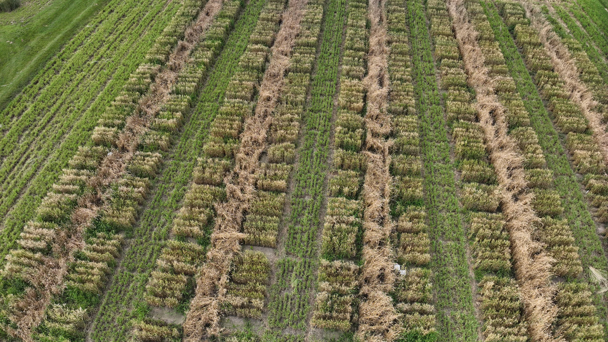
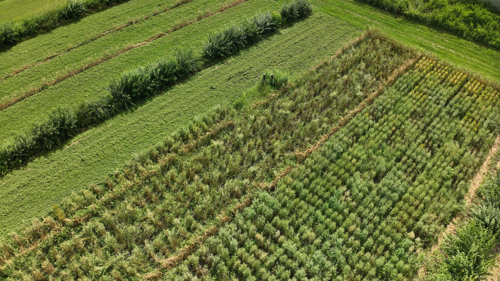
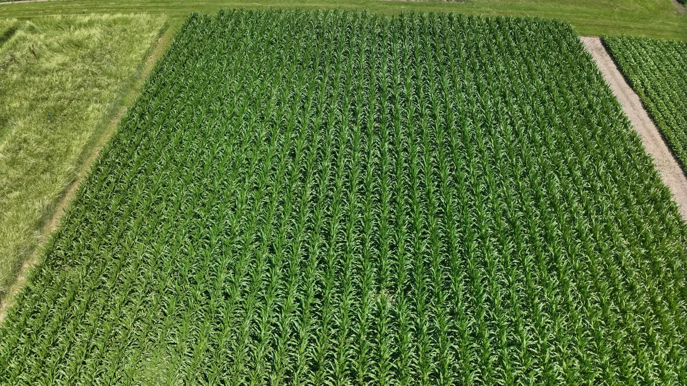
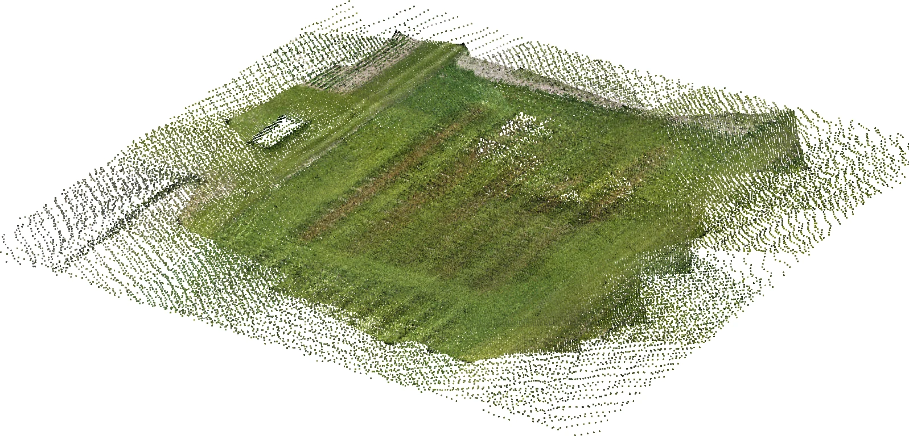

Track A
Novel view synthesis
Seven scene-optimized methods compared on identical held-out crop regions.

UAV3DCrop is a large-scale benchmark for 3D reconstruction across crop types, growth stages and repeated UAV acquisitions.

Four crop systems captured under real outdoor conditions, with substantial variation in canopy structure, illumination and growth stage.

Corn
Soybean
Wheat
OatMove through the sequence to see how canopy geometry changes over the season. Acquisitions are represented as growth stages to emphasize structural change.

Evaluate view synthesis and geometry reconstruction under the visual ambiguity of dense, repeating crop canopies.
Seven scene-optimized methods compared on identical held-out crop regions.
Consistent, uncropped views of direct geometry outputs and the four-model benchmark.

Access the public RGB imagery and depth releases on Hugging Face.